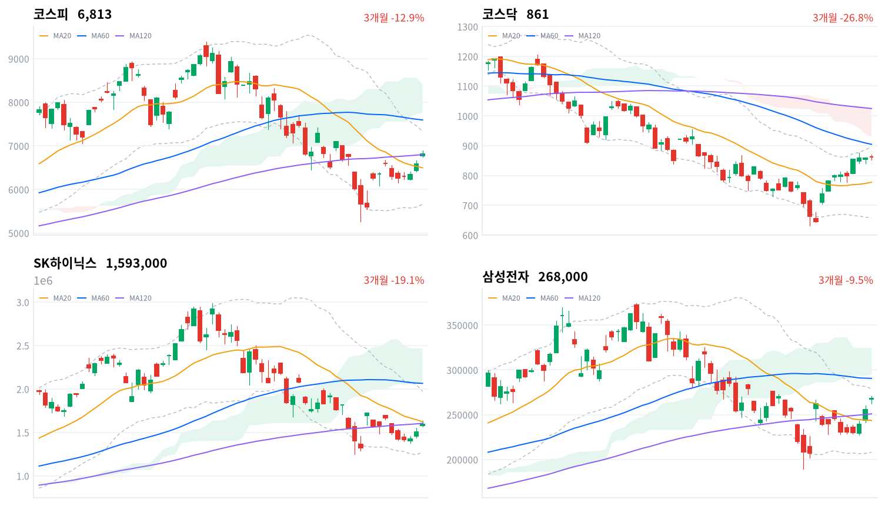
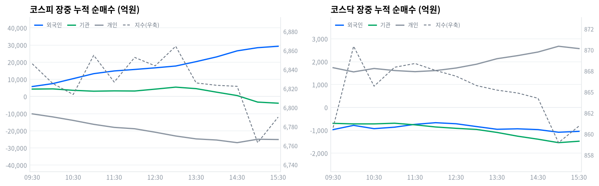

동인 코스피는 전일 종가(6,579.04포인트) 대비 갭업 출발한 6,773.92포인트에서 상승을 이어가 정오를 전후해 6,850~6,860포인트대까지 올랐고(13시 6,864.47포인트 부근에서 고점권 형성) 오후 들어 상승폭을 반납하며 15시 6,763.17포인트까지 밀렸다가 장 막판 되돌림을 거쳐 6,813.34포인트(+3.56%)로 마감했다 — 다수 매체가 보도한 대로 4거래일 연속 상승이다. 코스닥은 863.15포인트에서 출발해 10시 870.44포인트까지 오른 뒤(일중 고가 870.96포인트는 그 부근에서 형성) 오후 들어 등락을 거듭하다 861.37포인트(+0.29%)로 강보합 마감했다. 간밤 미국에서 7월 CPI가 전년比 3.4% 상승해 시장 예상에 부합하며 9월 FOMC 긴축 우려가 완화된 가운데, 코어위브·슈퍼마이크로컴퓨터의 실적 서프라이즈가 해외 반도체·AI인프라주 강세로 이어졌고 이 훈풍이 삼성전자·SK하이닉스 등 국내 반도체 대형주 급등으로 연결됐다(뉴스핌·이투데이·fn뉴스 등 다수 매체 교차 보도).
크로스에셋·수급 정합성 수급은 가격 상승과 대체로 정합했다. 코스피에서 외국인이 2조1102억원, 기관이 6,834억원을 순매수(모두 당일 잠정)한 반면 개인은 2조7410억원을 순매도해 '외국인·기관 쌍끌이-개인 역행' 구도가 이어졌다. 업종별로도 반도체와반도체장비가 +5.15%(171종목 중 87종목 상승, breadth 0.509)로 폭넓은 상승 주도를 보였고, 거래대금 상위에서도 삼성전자(9.50조원)·SK하이닉스(7.39조원) 개별주 매수(합산 16.89조원)가 반도체 테마 ETF 8종 합산(1.77조원) 바스켓 매수를 압도해 이번 랠리가 개별 종목 직접 매수 중심이었음을 보여준다. 다만 코스피 프로그램 매매는 비차익 -671억원·전체 -619억원 순매도를 기록해 외국인의 대규모 현물 순매수와 방향이 어긋났는데, 지수 상승분이 프로그램(선물 연계) 자금이 아니라 일반 매매를 통해 유입됐다는 뜻으로 볼 수 있다. 코스닥에서는 반대로 개인이 2,565억원 순매수한 반면 외국인·기관은 각각 1,362억원·1,132억원 순매도해, 반도체 자금이 대형주 중심의 코스피에 집중되고 코스닥은 상대적으로 소외되는 정합성 괴리가 함께 나타났다.
다음 촉매·확인 트리거 기술적으로 코스피는 20일선(6,495.81포인트)을 4.89% 웃돌지만 일목균형표 구름대(7,755.82~8,412.34포인트) 아래에 머물러 있어, 오늘의 반등이 추세 전환으로 이어지려면 20일 스윙 고점(7,529.07포인트) 돌파 여부를 먼저 지켜봐야 한다. 장중 수급에서도 기관 순매수가 13시12분 +6,907억원으로 정점을 찍은 뒤 정규장 마감(15시30분, 장중 세션 마지막 관측 기준 -3,877억원)까지 순매도로 돌아섰는데, 세부적으로는 금융투자(프로그램 성격)가 -9,391억원까지 매도를 늘린 반면 연기금등은 +2,323억원 순매수를 유지해 오후 매도 압력의 실질 주체가 정책성 장기자금이 아니라 프로그램 자금이었음을 시사한다. 다음 확인 지점은 8월27일 한은 금통위, 9월18일 시행 예정인 반도체산업 경쟁력 강화 특별법, 그리고 8월13일 당일 발표된 수도권 주택공급 확대 대책이 건설업종 전반(오늘은 +0.41%, breadth 0.282로 좁은 상승에 그침)으로 확산되는지 여부다.
| 지수 | 종가 | 등락률 | 일중 고가 | 일중 저가 |
|---|---|---|---|---|
| 코스피 | 6,813.34 | +3.56% | 6,895.63 | 6,748.13 |
| 코스닥 | 861.37 | +0.29% | 870.96 | 853.09 |
코스피는 전일 종가(6,579.04포인트) 대비 갭업 출발한 6,773.92포인트에서 장을 열었다. 09시 6,801.09포인트로 상승폭을 키운 뒤 오전 내내 우상향해 11시 6,854.98포인트, 13시 6,864.47포인트까지 올랐고 일중 고가(6,895.63포인트)는 그 부근에서 형성된 것으로 보인다. 오후 들어서는 상승폭을 반납하기 시작해 15시 6,763.17포인트까지 밀렸는데(일중 저가 6,748.13포인트도 이 무렵 근접 형성) 장 막판 반등해 15시30분 6,790.01포인트를 거쳐 최종 6,813.34포인트(+3.56%)로 마감했다.
코스닥은 863.15포인트에서 출발해 10시 870.44포인트까지 올랐고 일중 고가(870.96포인트)는 그 부근에서 형성된 것으로 추정된다. 이후 오전 후반부터 완만하게 밀리며 12시 867.56포인트, 14시 864.88포인트로 상승폭을 반납했고 15시 858.97포인트까지 더 눌렸다(일중 저가 853.09포인트는 정규 30분 샘플에는 나타나지 않지만 이 무렵 근접 형성된 것으로 보인다). 마지막 15시30분 860.95포인트를 거쳐 861.37포인트(+0.29%)로 강보합 마감했다.
오늘 랠리의 직접 배경은 간밤 미국 지표·실적이다. 미 노동부가 발표한 7월 CPI가 전년比 3.4% 상승해 전월(3.5%)보다 둔화하고 시장 예상에 부합하면서 9월 FOMC의 긴축 우려가 완화됐다(뉴스핌·Benzinga Korea·fn뉴스 보도). 여기에 코어위브(2분기 매출 전년比 +112%)·슈퍼마이크로컴퓨터의 실적 서프라이즈가 겹쳐 필라델피아반도체지수 등 해외 반도체·AI인프라주가 강세를 보였고, 이 훈풍이 국내 삼성전자·SK하이닉스 등 반도체 대형주의 장 초반 동반 급등으로 이어졌다(뉴스핌·이투데이·fn뉴스·한국경제·헤럴드경제 등 다수 매체 교차 보도).

코스피 코스피는 6,813.34포인트로 마감해 20일선(6,495.81포인트)을 4.89%, 120일선(6,799.15포인트)을 0.21% 웃돌지만 60일선(7,593.25포인트)은 10.27% 밑돌아 이동평균이 혼조 배열을 이루고 있다. 일목균형표에서는 전환선(6,487.94)이 기준선(6,795.01) 아래에 있지만 가격 자체는 기준선을 살짝 웃돌고 있고, 구름대(7,755.82~8,412.34포인트) 아래에는 여전히 머물러 있어 추세 전환이 완성되지 않은 그림이다. 상승 시나리오는 20일 스윙 고점(7,529.07포인트) 돌파가 1차 트리거이며, 이를 넘어서면 구름대 하단(7,755.82포인트)이 다음 저항이다. 하락 시나리오는 120일선·기준선이 겹치는 6,795~6,799포인트 구간 이탈이 트리거로, 이 경우 20일선(6,495.81포인트)까지 되밀릴 수 있고 20일·60일 스윙 저점이 겹치는 5,262.77포인트가 최후 지지선이다. 볼린저밴드 %b는 0.69로 중심선(6,495.81포인트)과 상단(7,332.79포인트) 사이 상단권에 위치한다.
코스닥 코스닥은 861.37포인트로 마감해 20일선(777.14포인트)을 10.84% 웃돌지만 60일선(904.52포인트)·120일선(1,024.59포인트)은 각각 4.77%·15.93% 밑돌아 이동평균은 역배열을 유지하고 있다. 볼린저밴드 %b는 0.853으로 상단(896.52포인트)에 근접해 단기 과열 신호가 뚜렷하다. 일목균형표에서는 전환선(790.11)이 기준선(753.07)을 웃돌아 단기 모멘텀은 우호적이지만 가격은 여전히 구름대(928.89~1,026.70포인트) 아래에 머물러 있다. 상승 시나리오는 20일 스윙 고점(875.16포인트) 돌파가 1차 트리거이며, 이를 넘어서면 구름대 하단(928.89포인트)이 다음 저항이다. 하락 시나리오는 전환선(790.11)·기준선(753.07) 아래로 밀리는 것이 트리거로, 1차 지지는 20일선(777.14포인트)이고 이마저 무너지면 20일·60일 공통 스윙 저점(630.99포인트)이 최후 지지선이다.
SK하이닉스 SK하이닉스는 159만3000원으로 마감해 20일선(162만1400원)을 1.75%, 120일선(160만3966.67원)을 0.68% 밑돌아 사실상 120일선 부근에 위치하며, 60일선(206만3883.33원)과는 22.82% 벌어져 있어 이동평균은 혼조 배열이다. 일목균형표에서는 전환선(153만7000원)이 기준선(178만7500원) 아래에 있고 가격도 구름대(208만5000~246만8500원) 아래에 머물러 있다. 상승 시나리오는 20일선(162만1400원) 회복이 1차 트리거이며, 이를 넘어서면 20일 스윙 고점(200만6000원)이 다음 목표다. 하락 시나리오는 120일선(160만3966.67원) 이탈이 트리거로, 이 경우 볼린저 하단(127만1215.82원)과 근접한 20일·60일 공통 스윙 저점(124만6000원)이 최후 지지선이다. 볼린저 %b는 0.459로 중심선 부근에 위치한다.
삼성전자 삼성전자는 26만8000원으로 마감해 20일선(24만3500원)을 10.06%, 120일선(25만921.25원)을 6.81% 웃돌지만 60일선(29만516.67원)은 7.75% 밑돌아 이동평균이 혼조 배열이다. 볼린저밴드 %b는 0.846으로 상단(27만8948.55원)에 근접해 있다. 일목균형표에서는 전환선(24만9250원)·기준선(24만4600원)을 모두 웃돌아 단기 모멘텀은 우호적이지만, 가격은 구름대(29만5000~32만5000원) 아래에 머물러 있다. 상승 시나리오는 20일 스윙 고점(27만6000원) 돌파가 1차 트리거이며, 이를 넘어서면 구름대 하단(29만5000원)이 다음 저항이고 60일 스윙 고점(37만4500원)이 궁극적 목표다. 하락 시나리오는 20일선(24만3500원) 이탈이 트리거로, 20일·60일 스윙 저점이 겹치는 18만9200원이 최후 지지선이다.
위 레벨은 kr_technical.json의 이동평균·볼린저밴드·일목균형표·스윙 고저를 기계적으로 계산한 것으로, 투자 권유가 아니다.
코스피 수급표를 보면 외국인이 2조1102억원, 기관이 6,834억원을 순매수(모두 당일 잠정)한 반면 개인은 2조7410억원을 순매도했다. 반도체 대형주 중심의 급등에 외국인·기관이 함께 화답했고, 개인은 전날(8월12일 -3조1911억원)에 이어 이틀 연속 대규모 매도에 나선 모습이다.
| 코스피 (억원, 당일 잠정) | 개인 | 외국인 | 기관 |
|---|---|---|---|
| 2026-08-13 | -27,410 | +21,102 | +6,834 |
| 코스닥 (억원, 당일 잠정) | 개인 | 외국인 | 기관 |
|---|---|---|---|
| 2026-08-13 | +2,565 | -1,362 | -1,132 |
코스피에서 외국인·기관의 매수 방향은 지수 급등과 정합됐다 — 반도체와반도체장비 업종이 +5.15%(171종목 중 87종목 상승, breadth 0.509)로 폭넓게 오른 것과 겹치는 대목이다. 코스닥은 반대로 개인이 매수 주체였고 외국인·기관은 순매도로 대응해, 반도체 랠리 자금이 대형주 중심의 코스피에 쏠리고 코스닥은 상대적으로 소외된 구도가 이어졌다.

| 시각 | 코스피 (억원) | 코스닥 (억원) | ||||
|---|---|---|---|---|---|---|
| 개인 | 외국인 | 기관 | 개인 | 외국인 | 기관 | |
| 09:30 | -10,093 | 5,832 | 4,348 | 1,739 | -968 | -694 |
| 10:00 | -11,861 | 7,542 | 4,466 | 1,556 | -783 | -719 |
| 10:30 | -13,909 | 10,434 | 3,624 | 1,705 | -927 | -718 |
| 11:00 | -16,200 | 13,335 | 3,118 | 1,615 | -862 | -689 |
| 11:30 | -17,975 | 14,923 | 3,308 | 1,566 | -738 | -760 |
| 12:00 | -18,774 | 15,789 | 3,227 | 1,613 | -666 | -853 |
| 12:30 | -20,792 | 16,741 | 4,323 | 1,725 | -712 | -912 |
| 13:00 | -22,995 | 17,792 | 5,484 | 1,892 | -835 | -961 |
| 13:30 | -24,688 | 20,359 | 4,606 | 2,133 | -954 | -1,092 |
| 14:00 | -25,343 | 23,120 | 2,542 | 2,267 | -933 | -1,255 |
| 14:30 | -26,879 | 26,634 | 579 | 2,425 | -968 | -1,388 |
| 15:00 | -24,882 | 28,483 | -3,230 | 2,677 | -1,083 | -1,539 |
| 15:30 | -25,049 | 29,314 | -3,877 | 2,575 | -1,045 | -1,476 |
코스피 외국인 누적선은 하루 종일 방향 전환 없이 순매수 쪽으로만 움직였다(turns 비어있음) — 09시01분 +1,671억원에서 시작해 15시19분 +2조9320억원까지 꾸준히 불어났고 정규장 마감(15시30분) 때도 +2조9314억원으로 거의 그대로 유지됐다. 개인 누적선은 반대 방향으로 하루 종일 순매도 기조를 유지했다(전환 없음) — 09시01분 -1,029억원에서 출발해 14시22분 -2조7056억원까지 매도가 불어났다가 정규장 마감까지 소폭 되돌려져 15시30분 -2조5049억원을 기록했다.
기관 누적선만 하루 중 두 차례 방향을 바꿨다 — 09시04분 순매도에서 순매수로 전환해 13시12분 +6,907억원까지 늘었고(§3의 13시 지수 고점 6,864.47포인트와 시점이 겹친다), 14시34분 다시 순매도로 돌아서 15시21분 -3,877억원까지 매도가 커졌다(§3에서 지수가 15시 6,763.17포인트까지 밀린 오후 흐름과 방향이 겹친다). 코스닥에서도 세 주체 모두 전환 없이 단조 흐름을 보였다 — 개인은 09시04분 +590억원에서 15시03분 +2,809억원까지 매수를 늘렸고, 외국인은 09시04분 -309억원에서 09시21분 -1,190억원까지, 기관은 09시01분 -241억원에서 15시03분 -1,597억원까지 매도 규모를 각각 키웠다.
기관 누적선을 세부 주체로 나눠보면, 금융투자(프로그램·선물 연계 성격)는 하루 종일 순매도를 유지하며 09시30분 -1,722억원에서 15시30분 -9,391억원까지 매도 규모를 계속 키웠다. 연기금등(정책성 장기자금)은 반대로 하루 내내 순매수를 유지해 09시30분 +3,001억원에서 13시00분 +4,223억원까지 늘었다가 소폭 줄어 15시30분 +2,323억원으로 마감했다.
오늘 기관 지표가 오후 들어 순매도로 전환된 배경은 연기금이 아니라 금융투자의 매도 확대에 있으며, 이는 바로 아래 프로그램 매매에서 코스피 비차익이 -671억원 순매도를 기록한 것과 방향이 겹친다 — 프로그램·선물 연계 자금이 오후 매도 압력의 실질 주체였다.
정규장 마지막 관측치(session_last, 15시30분)와 확정치를 비교하면 괴리가 컸다. 외국인은 +2조9314억원에서 +2조1102억원으로(-8,212억원) 큰 폭 하향 정정됐고, 기관은 -3,877억원에서 오히려 +6,834억원으로(+1조711억원) 부호 자체가 뒤바뀌었다.
개인은 -2조5049억원에서 -2조7410억원으로(-2,361억원) 매도가 더 늘어난 것으로 확정됐다. 기관의 부호 반전은 장중 스냅샷을 확정치로 오인해서는 안 되는 이유를 그대로 보여주는 사례이며, 다음 거래일에는 이 정정 패턴이 반복되는지와 연기금·금융투자 라인이 확정치 기준으로는 어떤 방향이었는지 재확인이 필요하다.
| 구분 (억원, 당일 잠정) | 차익 순매수 | 비차익 순매수 | 전체 순매수 |
|---|---|---|---|
| 코스피 | +52 | -671 | -619 |
| 코스닥 | -32 | -1,084 | -1,116 |
코스피 프로그램 매매는 비차익(방향성 바스켓) -671억원과 차익(선물 연계) +52억원이 상쇄돼 전체 -619억원 순매도를 기록했다. 외국인 현물 순매수(+2조1102억원, 당일 잠정)와 방향이 어긋나는 대목으로, 오늘 지수 상승을 이끈 매수세가 프로그램이 아니라 일반 매매를 통해 유입됐다는 뜻으로 읽힌다. 코스닥은 비차익 -1,084억원, 차익 -32억원으로 전체 -1,116억원 순매도를 기록해 코스닥 기관 순매도(-1,132억원, 당일 잠정)와 방향이 대체로 일치한다 — 코스피 못지않게 코스닥에서도 프로그램 자금은 매도 우위였다.
| 순위 | 종목/ETF | 구분 | 거래대금 | 거래량 | 비고 |
|---|---|---|---|---|---|
| 1 | 삼성전자 | - | 9.50조 | 35,463,855 | - |
| 2 | SK하이닉스 | - | 7.39조 | 4,599,305 | - |
| 3 | 반도체 테마 ETF | 롱 | 1.77조 | 61,841,402 | 8종 합산 |
| 4 | 삼성전자우 | - | 1.04조 | 5,491,249 | - |
| 5 | 금호건설 | - | 0.53조 | 33,330,212 | - |
| 6 | SK하이닉스 레버리지 | 롱 | 0.46조 | 52,109,846 | 2종 합산 |
| 7 | SK이터닉스 | - | 0.42조 | 7,347,195 | - |
| 8 | 삼화콘덴서 | - | 0.42조 | 3,998,965 | - |
| 9 | NAVER | - | 0.41조 | 1,834,477 | - |
| 10 | 삼성전자 레버리지 | 롱 | 0.26조 | 20,716,171 | 2종 합산 |
오늘 거래대금 상위 10위 안에는 SK하이닉스 레버리지(0.46조원)·삼성전자 레버리지(0.26조원) 등 롱 상품만 이름을 올렸고 인버스(숏) 상품은 하나도 진입하지 못했다. 반도체 대형주의 동반 급등에 개인 투자자의 방향성 베팅이 온전히 매수 한쪽으로 쏠린 셈이다.
반도체 개별주인 삼성전자(9.50조원)·SK하이닉스(7.39조원)의 거래대금 합계는 16.89조원으로, 8종을 합산한 반도체 테마 ETF(1.77조원)의 9배가 넘는다. 오늘 반도체 매수는 바스켓보다 개별 종목 직접 매수 위주였다고 판정할 수 있다. 삼성전자우(1.04조원)까지 더하면 삼성전자 관련 거래대금만 10.54조원에 달해, 코스피 전체 거래대금에서 차지하는 비중이 상당했다.
금호건설(0.53조원, 5위)은 §8·§10에서 다루는 실적 발표·정책 재료가 겹치며 거래대금 상위권에 처음 진입했다. SK이터닉스(0.42조원)·삼화콘덴서(0.42조원)·NAVER(0.41조원)는 각각 7~9위권 거래대금을 기록했으나 오늘 당일 개별 재료는 뚜렷하게 확인되지 않아 반도체 랠리에 연동된 베타성 상승일 가능성이 크다.
위 섹터 차트(1D 기준)에서는 반도체(+3.88%)가 가장 크게 올랐고 방산(+2.40%)·로봇(+2.01%)·자동차(+1.80%)가 뒤를 이었다. Naver 기준 세분류 업종(kr_industry.json)으로 보면 전자장비와기기가 +9.28%(106종목 중 54종목 상승, breadth 0.509)로 가장 크게 뛰었고 leading:true로 폭넓은 상승이 확인된다.
반도체와반도체장비는 +5.15%(171종목 중 87종목 상승, breadth 0.509)로 역시 leading:true이며, 창업투자(+5.91%, 90종목 중 42종목 상승, breadth 0.467)도 유사한 폭으로 함께 올랐다.
반면 자동차부품(+2.06%, 155종목 중 52종목 상승, breadth 0.335)은 leading:false로 분류돼 상승률 자체는 준수했지만 참여 폭이 좁은 개별종목 장세로 나타났다 — 상승률만으로 업종 전체가 주도했다고 단정할 수 없는 사례다. 우주항공과국방(+3.30%, 33종목 중 21종목 상승, breadth 0.636)은 방산 섹터의 강세(+2.40%)와 방향이 일치하며 폭넓은 참여로 뒷받침됐다.
건설업종은 +0.41%(78종목 중 22종목 상승, breadth 0.282)로 leading:false — 좁은 상승·개별종목 장세에 그쳤다. §10에서 다루는 8월13일 당일 발표된 수도권 주택공급 확대 대책에도 불구하고 업종 전반의 폭넓은 매수로는 이어지지 않은 셈이며, 이는 금호건설 등 개별 재료가 겹친 종목에 국한된 상승으로 판단된다.
삼성전자는 오늘 거래대금 1위(9.50조원)를 기록했다. 간밤 미국 7월 CPI 예상 부합과 코어위브·슈퍼마이크로의 실적 서프라이즈로 해외 반도체·AI인프라주가 강세를 보인 여파가 국내 대형 반도체주로 이어졌다(뉴스핌·이투데이·fn뉴스 등 다수 매체 보도).
SK하이닉스는 거래대금 2위(7.39조원)에 올랐다. 삼성전자와 함께 오늘 랠리를 견인한 두 축으로, 신현송 한은 총재가 통화정책 판단의 핵심 지표로 '반도체 가격'을 지목했다고 알려져(imnews 보도) 향후 금통위 셈법과도 연결되는 종목이다.
금호건설(거래대금 5위, 0.53조원)은 8월13일 당일 2026년 상반기 실적을 발표했다 — 연결 매출 9,650억원, 영업이익 286억원(전년동기比 +30.6%), 원가율이 94.6%에서 93.2%로 개선됐고 차입금도 1,571억원에서 1,286억원으로 줄었다(뉴스핌·헤럴드경제 8/13자 교차 확인). 앞서 8월11일 장 초반 상한가(+29.98%)를 기록하며 VI가 발동된 바 있어, 오늘의 거래대금 급증은 실적 발표 IR과 §10에서 다루는 건설업종 정책 기대, 저가주 수급이 겹친 결과로 풀이된다.
SK이터닉스(0.42조원)·삼화콘덴서(0.42조원)·NAVER(0.41조원)는 오늘 거래대금 상위권에 들었지만 당일 고유 재료는 확인되지 않았다. SK이터닉스는 태양광·풍력·ESS 등 신재생에너지 사업을 영위하는 종목으로 AI데이터센터發 전력수요 확대가 반복적으로 거론되는 테마이고, 삼화콘덴서는 반도체·AI서버용 MLCC 수요 확대가 거론되는 종목이라 오늘도 반도체 랠리에 연동된 베타성 상승일 가능성이 있다. NAVER는 오늘자 구체 공시·뉴스 없이 대형주 전반의 지수 반등에 연동된 것으로 보인다.
SK하이닉스 레버리지(0.46조원)·삼성전자 레버리지(0.26조원)는 개인 투자자가 반도체 대형주 급등에 방향성 베팅을 늘린 결과로, 오늘 인버스(숏) 상품이 거래대금 상위에 하나도 들지 못한 점과 함께 매수 쏠림을 뒷받침한다.
이번 산출 주기에는 원/달러 환율 데이터가 입력에 포함되지 않았고, ECOS 국고채·회사채 금리도 국고채 3년·10년, CD 91일, 회사채 AA- 3년, 한국은행 기준금리 5개 지표 전량이 조회되지 않아 확보하지 못했다. 이 섹션은 다음 발행 회차에서 데이터가 확보되는 대로 재개한다.
한국은행 금융통화위원회는 7월16일 기준금리를 2.50%에서 2.75%로 25bp 인상했다 — 위원 7인 전원 찬성으로 3년6개월 만의 긴축 전환이었고, 결정문에는 '인상 기조를 이어갈 필요'가 명시됐다(MBC뉴스·뉴시스 보도). 인상 배경으로 반도체 경기 호조에 따른 수출·내수 개선이 꼽혔다는 점에서, 오늘 반도체 대형주 랠리와 통화정책 논리가 같은 뿌리를 공유한다.
전달 경로는 멀티플이다 — 금리 수준 자체가 할인율을 통해 밸류에이션에 직접 영향을 준다. 신현송 한은 총재가 통화정책 판단의 핵심 지표로 '반도체 가격'을 지목했다고 알려져(imnews 보도), 이번 주 반도체주 랠리의 지속 여부가 8월27일 금통위 결정의 선행 지표로 해석될 소지가 있다.
오늘 시장은 반도체 재료가 금리 인상 리스크를 압도하는 모습이었다 — 은행 업종은 +1.73%(11종목 중 9종목 상승, breadth 0.818)로 오히려 폭넓게 올라 순이자마진 개선 기대와 지수 전반의 강세가 함께 실린 것으로 보이며, 금리 인상에 따른 고배당·고부채 업종 부담은 아직 가격에 뚜렷하게 나타나지 않았다.
다음 확인 지점은 8월27일 금통위다. 씨티은행은 추가 25bp 인상을, 바클레이즈·NH투자증권은 동결을 각각 전망하고 있어 시장 컨센서스가 갈린 상태다.
반도체산업 경쟁력 강화 및 지원에 관한 특별법은 올해 1월29일 국회 본회의를 통과했고 시행일은 9월18일로 확인된다(이포커스 규제추적 기사 기준). 산업통상부는 시행에 앞서 8월 중 '반도체 혁신지원단'을 신설해 '3S+1F' 메가프로젝트 이행을 지원할 예정이다. 별도로 미국의 상호관세는 15%로 인하돼 8월7일부터 시행 중이며, 반도체·반도체 장비에 대한 무역확장법 232조 관세는 핵심 경쟁국 대만과의 향후 합의에 비해 불리하지 않은 대우를 보장받기로 한 상태다.
전달 경로는 이익이다 — 특별법의 클러스터 기반시설 국비 지원은 원가 부담을 낮추고, 관세율 인하는 수출단가·마진에 직접 영향을 준다. 다만 한국 정부가 미국의 '특정민감국' 지정 해제를 위한 협상을 8월 현재도 진행 중이라, 지정이 유지될 경우 관세 리스크가 재부각될 수 있다는 멀티플(정책 불확실성 할인) 경로도 함께 작동한다.
삼성전자·SK하이닉스 등 오늘 급등한 대형 반도체주가 두 정책의 최대 수혜 후보이지만, 오늘 랠리의 직접 동인은 특별법·관세 협상이 아니라 미국 CPI 지표와 AI 인프라 기업의 실적 서프라이즈였다. 두 정책은 아직 시행 전(특별법) 또는 협상 진행 중(특정민감국 해제)이라, 오늘 가격에 직접 반영됐다기보다 배경 재료로 자리했다고 본다.
다음 확인 지점은 특별법 시행일인 9월18일과 특정민감국 지정 해제 협상 결과이며, 후자의 구체 발표 일정은 미확정이다.
정부는 8월13일 당일 신규 공공주택지구 10만가구를 포함해 수도권에 23만가구 이상을 공급하는 주택공급 확대 대책을 발표했다 — 여당은 '20조원 투입'을 주장했고 야당은 '뉴홈 문제 해결이 먼저'라며 이견을 보였다(파이낸셜뉴스 8/13자 보도). 앞서 8월10일에는 인허가·환경영향평가 절차 단축과 전력·용수·교통 기반시설 신속 정비를 골자로 한 '메가특구특별법'을 연내 제정 추진한다는 발표도 있었다(이코노미스트 보도).
전달 경로는 수급과 이익 두 갈래다 — 정책 수혜 기대에 따른 저가 건설주 매수세 유입(수급)과 공공주택·인프라 수주 파이프라인 확대 기대(이익)가 함께 작동한다. 8월3일~13일 코스피 건설업종 지수가 131.38에서 163.91로 24.76% 급등했다는 보도(이투데이)와 결합해 볼 만하다.
다만 오늘 실제 가격 데이터를 보면 건설업종은 +0.41%(78종목 중 22종목 상승, breadth 0.282)로 leading:false — 좁은 상승·개별종목 장세에 머물렀다. 오늘 발표된 주택공급 대책이 업종 전반의 폭넓은 매수로 확산되지는 않았고, 실적 발표가 겹친 금호건설(거래대금 5위, 0.53조원)처럼 개별 재료가 강한 종목에 국한된 상승이었다 — 정책 재료가 업종 전체에는 아직 본격적으로 반영되지 않았다고 판단한다.
다음 확인 지점은 메가특구특별법의 '연내 제정' 목표와 주택공급대책 후속 입법·예산 편성이며, 둘 다 구체 국회 일정은 미확정이다.
기획재정부는 8월3일 '2026년 세제개편안'을 발표했다 — 고배당기업 배당소득 분리과세 특례(2,000만원 이하 14%~50억원 초과 30% 구간별 세율)를 신설하고, 상장법인 대주주 양도소득세 부과 기준 중 보유금액 기준을 시가 10억원 이상으로 되돌렸다(기획재정부 문답자료·법률신문 보도). 한편 국민연금은 2026년 국내주식 목표비중을 14.9%에서 20.8%로 상향 조정해 6월 말부터 적용하고 있다(뉴스1·머니투데이 보도).
전달 경로는 세제개편이 이익(세후 배당수익률), 국민연금 목표비중 상향이 수급(리밸런싱 매도 압력 완화) 두 갈래다. 배당 분리과세는 고배당주의 세후 실효수익률을 높이는 반면, 대주주 양도세 기준 완화는 연말 대주주 회피 매물 압력을 다시 키울 수 있는 이중적 재료다.
국민연금 목표비중 상향은 코스피 급등으로 실제 비중이 목표치를 넘어서 강제 매도해야 했던 리밸런싱 압력을 크게 낮췄다는 점에서 오늘 외국인·기관 쌍끌이 매수(§5)와 방향이 겹친다. 다만 오늘 거래대금 상위 종목은 반도체·건설 중심이라 고배당주 쏠림은 확인되지 않아, 세제개편안 자체가 오늘 가격에 반영됐다고 보기는 아직 이르다.
다음 확인 지점은 세제개편안의 9월 정기국회 세법 개정안 심의(구체 일정 미확정)와 국민연금기금운용본부의 분기별 포트폴리오 공시다.